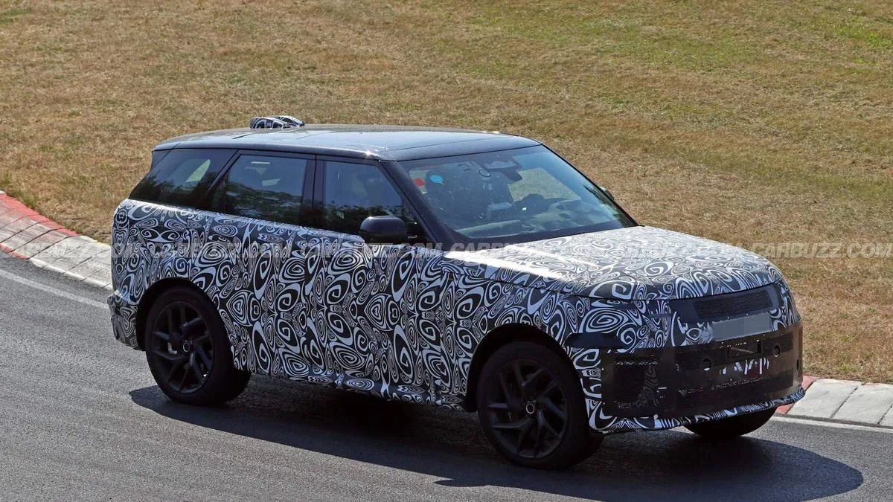
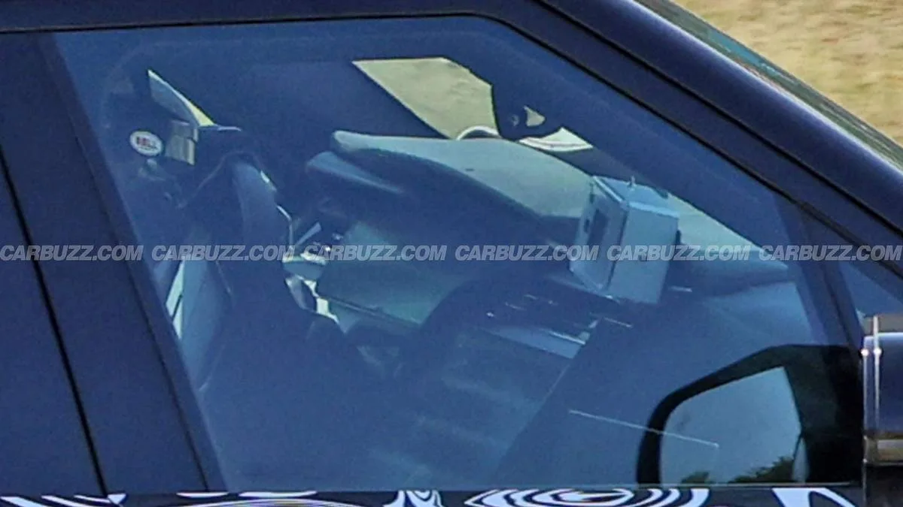
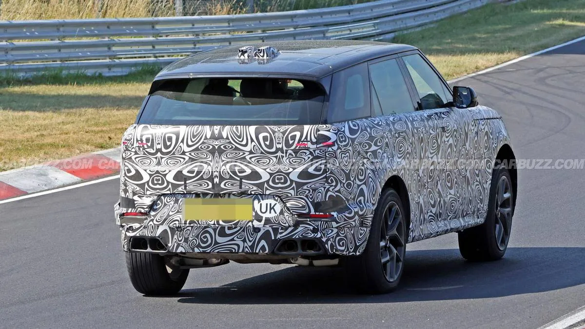

▲ 뉘르부르크링에서 포착된 레인지로버 스포츠 페이스리프트 위장차. 새로운 헤드라이트와 수정된 프론트 범퍼가 확인된다
차세대 레인지로버 스포츠로 추정되는 위장차가 독일 뉘르부르크링에서 테스트하는 모습이 포착됐습니다. 스파이샷을 통해 확인되는 변화는 새로운 헤드라이트(기존보다 작아진 조명 유닛)와 공기 흐름을 개선한 프론트 범퍼, 상향 이동한 사이드미러 반복기 신호등, 파워 벌지 효과를 준 후드 크리스, 새로운 테일라이트 시그니처와 리모델링된 리어 범퍼 등입니다.
1. 위장막 속에 숨겨진 디테일들
이번에 포착된 위장차는 대대적인 디자인 변화보다는 세부 다듬기에 가까운 변화들을 보여줍니다. 헤드라이트 유닛이 기존보다 작아진 것으로 확인되며, 프론트 범퍼는 공기 흐름 개선을 위해 형상이 수정됐습니다. 사이드미러의 방향지시등 위치가 위로 이동했고, 후드에는 파워 벌지를 연상시키는 새로운 크리스 라인이 추가됐습니다. 후면부 역시 테일라이트 시그니처가 새롭게 디자인되고 리어 범퍼가 리모델링되는 등, 전반적으로 세대교체보다는 상품성 개선에 가까운 변화로 읽힙니다.

▲ 측면에서 본 위장차. 전체적인 실루엣과 비례는 기존 세대와 큰 차이가 없어 보인다
2. "이걸로 X5를 넘을 수 있을까" — 제기되는 의문
이번 스파이샷을 보도한 CarBuzz는 랜드로버의 이런 진화적 접근 방식이 BMW X5 같은 강력한 경쟁 모델을 넘어서기엔 충분하지 않을 수 있다는 의문을 제기했습니다. 프리미엄 대형 SUV 시장에서 BMW X5, 메르세데스 GLE, 포르쉐 카이엔 등 경쟁 모델들이 지속적으로 상품성을 강화하고 있는 가운데, 레인지로버 스포츠가 소폭의 디자인 수정만으로 경쟁 우위를 지켜낼 수 있을지가 관건이라는 지적입니다. 다만 파워트레인이나 실내 변화 등 아직 공개되지 않은 요소들이 남아있어, 최종 평가는 정식 공개 이후에나 가능할 것으로 보입니다.
| 부위 | 변화 내용 |
|---|---|
| 헤드라이트 | 축소된 조명 유닛 |
| 프론트 범퍼 | 공기 흐름 개선 형상 |
| 후드 | 파워 벌지 크리스 라인 추가 |
| 사이드미러 | 반복기 신호등 위치 상향 |
| 테일라이트 | 새로운 시그니처 디자인 |
| 리어 범퍼 | 리모델링 |

▲ 후면에서 본 위장차. 새로운 테일라이트 시그니처와 리모델링된 범퍼가 위장막 사이로 드러난다
3. 전기 버전 추가, 파워트레인은 여전히 안갯속
이번 페이스리프트에서 가장 주목되는 변화는 디자인보다 파워트레인일 가능성이 있습니다. 랜드로버는 레인지로버 스포츠 라인업에 전기 버전을 추가할 예정으로 알려져 있지만, 구체적인 배터리 용량이나 출력, 주행거리 등은 아직 공개되지 않았습니다. 최근 공개된 레인지로버 GT가 순수전기 기반으로 먼저 나온다는 점을 고려하면, 스포츠 라인업의 전동화 역시 브랜드 전체의 전동화 전략과 맞물려 진행될 것으로 보입니다.

▲ 뉘르부르크링에서 주행 테스트 중인 위장차. 파워트레인 관련 정보는 아직 공개되지 않았다
4. 4년 만의 손질, 자연스러운 주기
현재 판매 중인 3세대 레인지로버 스포츠는 2022년 5월 처음 공개돼 2023년형으로 출시됐습니다. 이번 페이스리프트가 예정대로 2026년 말 데뷔한다면, 완전변경 이후 약 4년 만의 중간 손질이 되는 셈입니다. 이는 프리미엄 SUV 업계의 통상적인 페이스리프트 주기와 크게 다르지 않습니다. 미국 시장에서는 2025년 한 해에만 1만8,175대가 판매되며 견조한 수요를 유지하고 있어, 이번 페이스리프트는 신규 고객 유치보다는 기존 라인업의 상품성을 다듬어 경쟁력을 지키는 데 방점이 찍힐 것으로 보입니다.
5. 정리 — 2026년 말 데뷔 예상
이번 페이스리프트 모델은 2026년 말 정식 데뷔가 예상됩니다. 위장막에 가려진 만큼 아직 확정적으로 말하기는 이르지만, 지금까지 포착된 변화들은 대대적인 세대교체보다는 상품성 개선에 방점이 찍힌 모습입니다. 진짜 관건은 공개되지 않은 실내 인포테인먼트 시스템과 파워트레인 라인업이 될 것으로 보이며, 이 부분에서 얼마나 경쟁력을 확보하느냐에 따라 BMW X5를 비롯한 경쟁 모델들과의 격차가 결정될 전망입니다.